남티롤(Südtirol) 이야기 (1) - 이탈리아의 야심
게시: 2026-05-21T06:30:26+09:00
이번에는 남티롤 쪽으로 넘어가 보시겠습니다. 제가 티롤이라는 이름을 대충 들어서 어렴풋이 그게 어디인지는 알고 있었는데, 꼭 가보고 싶다는 생각을 품게 된 건 거의 25년 전, 회사의 어떤 분이 '자기가 가본 곳 중에서 가장 아름다웠던 곳은 신혼 여행지였던 티롤'이라고 말하는 것을 듣고나서부터였습니다. 제가 연재하는 나폴레옹 전쟁사 중 '티롤의 반란' 편을 읽어보셨다면, 티롤이 어디 있는 곳이고 어떤 사람들이 살고 있으며 어떤 역사를 가지고 있는지 대충 이해하실 것입니다. 인기 미드였던 밴드 오브 브라더즈의 마지막편에서 나오는 아름다운 오스트리아 시골 마을도 젤암제(Zell am See)라고, 티롤은 아니고 그와 인접한 지역입니다.
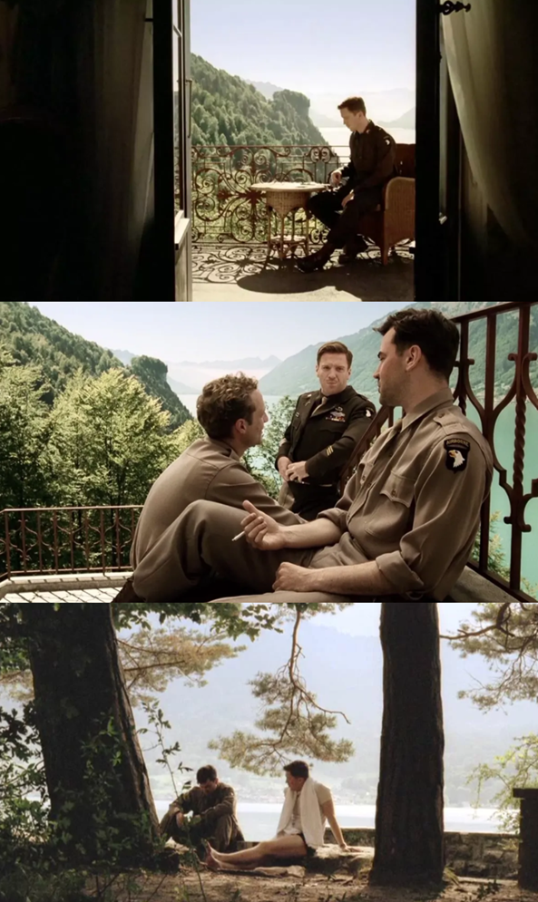
(다른 분들도 그랬으리라 생각되는데 저는 이 장면 보면서 마음이 치유되는 듯한 느낌이 들더군요. 다만 실제 이지 중대가 실제로 주둔했던 곳은 오스트리아 티롤 인근인 젤암제였지만, 드라마 속에 나오는 저 아름다운 풍경은 오스트리아가 아니라 스위스의 브리엔츠 호수(Brienzersee) 인근과 기스바흐(Giessbach), 운터제엔(Unterseen) 지역에서 촬영된 것이라고 합니다.) 아무튼 그래서 작년에 이스탄불에 이어 밀라노를 거쳐 오스트리아로 여행을 떠날 때, 잠깐이라도 좋으니 꼭 티롤을 거쳐야겠다고 생각하고는 티롤의 수도인 인스부르크(Innsbruck)를 들러야겠다고 생각했어요. 실제로도 다녀왔고요.
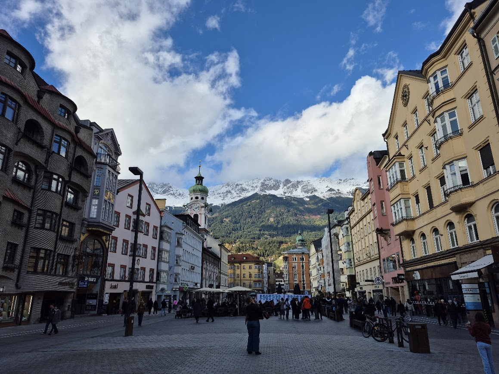 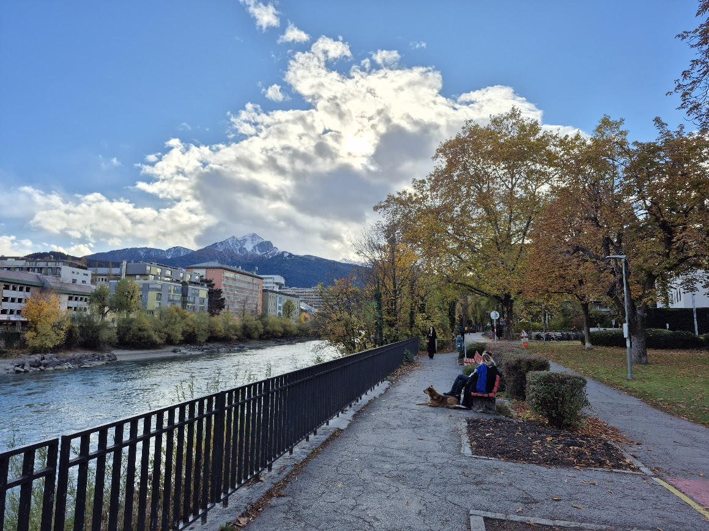 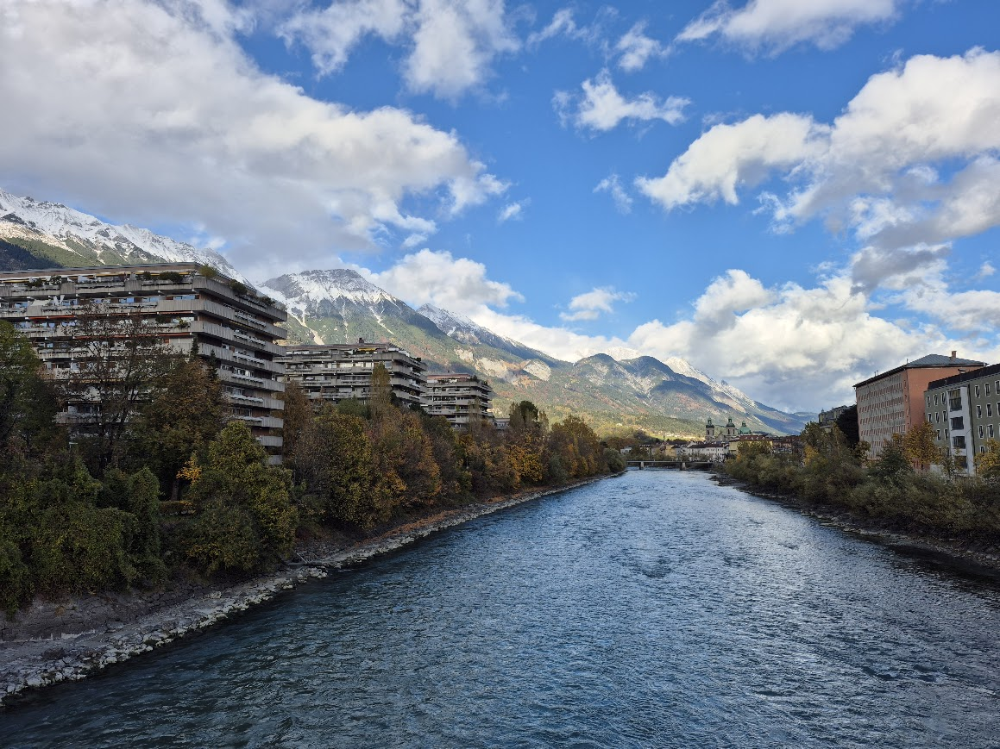 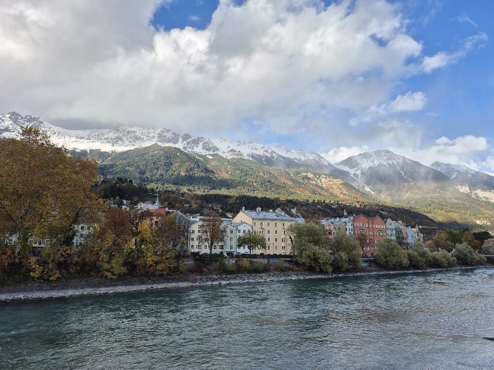
(인스부르크는 작고 조용하지만 매우 아름답고 깔끔한, 전형적인 티롤 지방이었습니다. 저 강이 저 도시의 이름을 준 인(Inn)강입니다. 인스부르크의 철자는 Innsburg가 아니라 Innsbruck인데, 이건 인(Inn)강에 놓인 다리(Brücke)라는 뜻입니다.) 작년 여행 일정을 짤 때 당연히 AI의 도움을 받았는데, 저는 전혀 생각도 안 했습니다만 AI가 '밀라노에서 인스부르크로 기차를 타고 간다고? 그러면 볼차노(Bolzano)도 꼭 봐야지!'라고 알려주더군요. 저는 볼차노라는 지명을 그때 처음 들었습니다. 알고 보니 볼차노가 알토 아디제(Alto Adige)의 주도이고, 돌로미티(Dolomiti) 산맥으로 가는 첫 관문이더군요. 그리고 알토 아디제라는 곳이 바로 남(南)티롤(Tyrol)이었습니다.
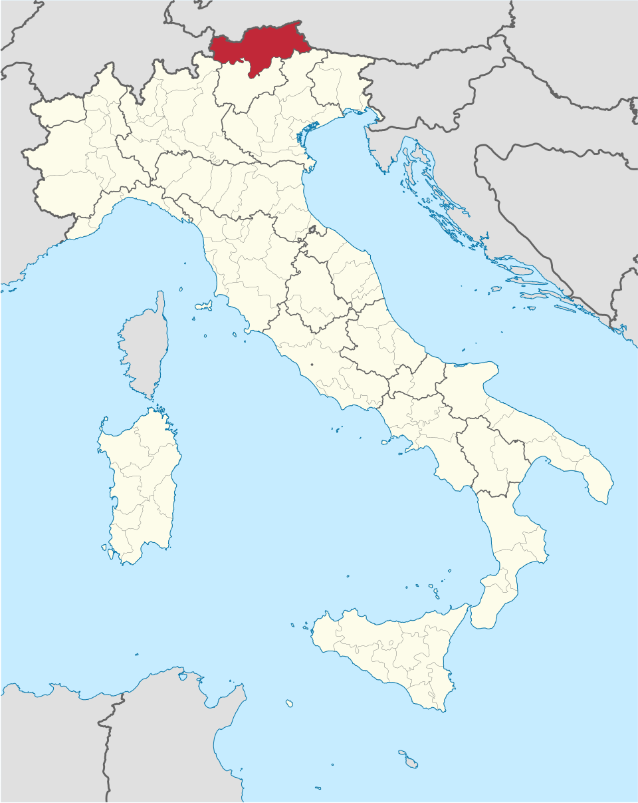
(이탈리아 내에서의 남티롤의 위치입니다.)
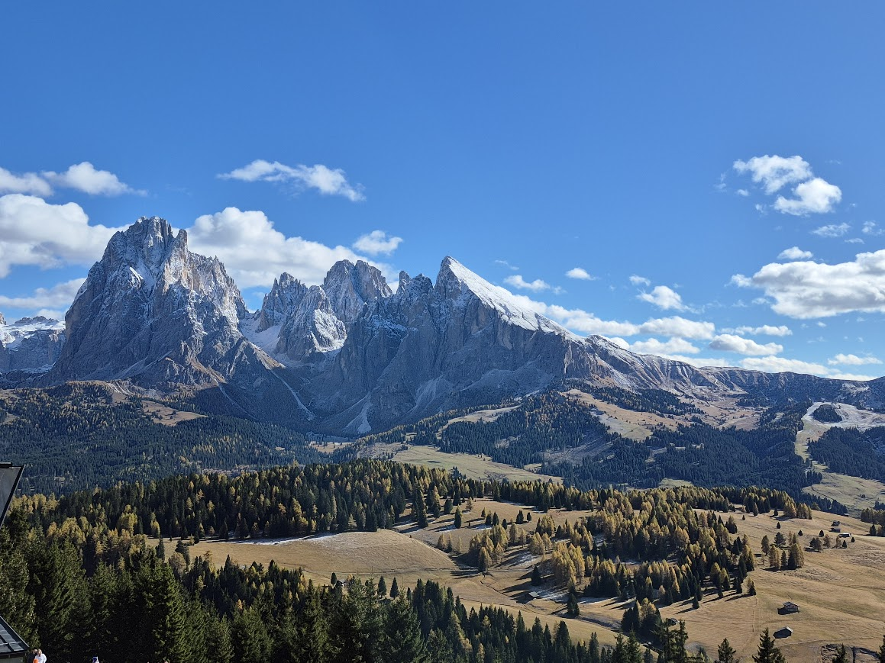 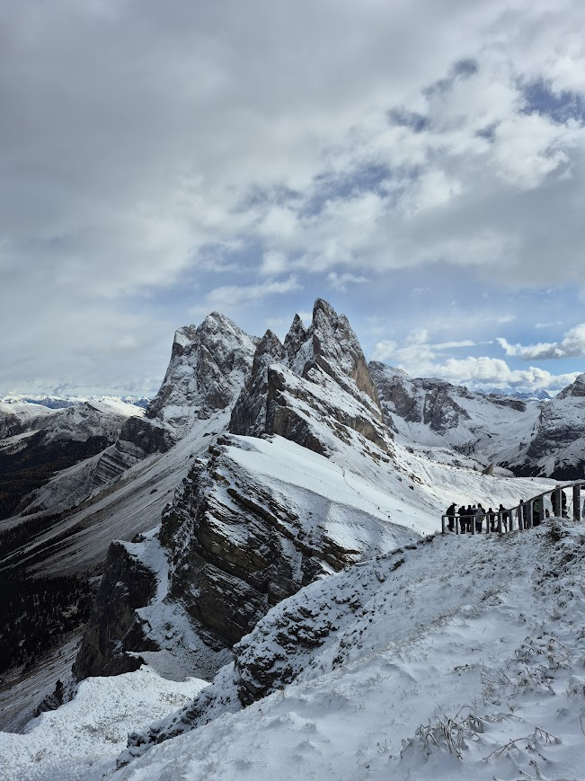 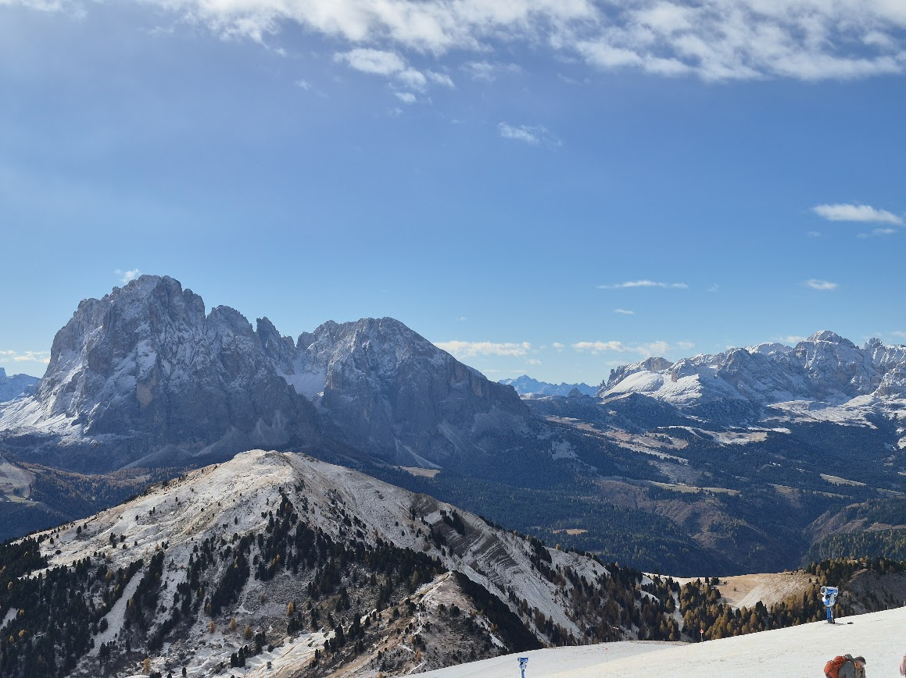 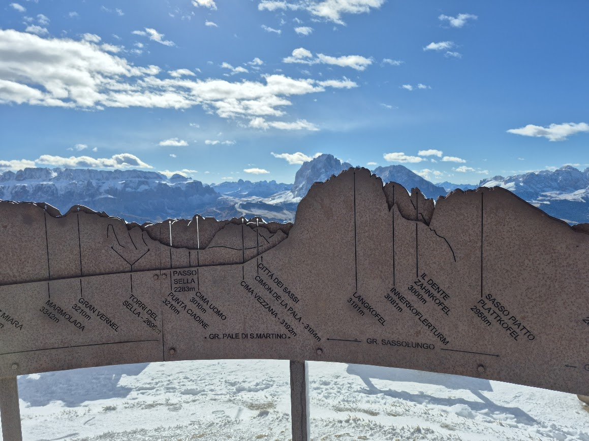
(돌로미티는 경치도 날씨도 너무 환상적이었습니다. 돌로미티는 그 일대의 여러 산을 포함한 암석지대를 일컫는 이름으로서, 원래는 그냥 "디 블라이헨 베르게(die bleichen Berge, 창백한 산맥)"이라는 이름으로 불렸답니다. 그러다 프랑스의 유명 지질학자인 돌로미외(Déodat Gratet de Dolomieu)가 1780년대 후반에 이곳을 여행하며 여기의 암석이 일반적인 석회암이 아니라 마그네슘 함량이 많은 탄산염으로 된 암석이라는 것을 발견하고 발표했는데, 곧 그 뒤에 다른 학자들이 그 암석을 돌로미(dolomie, 영어로는 돌로마이트 dolomite)라고 명명했습니다. 그 후에 그를 기념하여 이 산맥 자체를 돌로미티(dolomiti, 영어로는 Dolomites)라고 부르게 되었습니다.) 밀라노에서 볼차노로 이동할 때는 기차를 탔고, 볼차노에서 다시 버스를 타고 돌로미티의 입구 마을인 오르티세이(Ortisei)로 이동했는데, 그 버스 정거장에서 지명을 찾을 때부터 혼란을 겪었습니다. 우리는 그냥 볼차노, 오르티세이 그렇게 두 개의 지명만 알고 갔는데, 버스 정거장에서는 보젠(Bozen)이나 장크트 울리히(St. Ulrich) 같은 못 보던 지명이 씌어 있었던 것입니다.
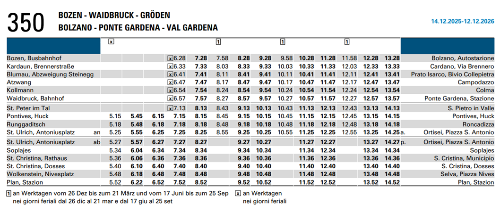
(제가 처음 보고 무척 당황한 버스 시간표입니다. 상식적으로 표의 좌측에는 출발지 지명, 우측에는 도착지 지명이 적혀 있을 거라고 생각했는데, Bozen이니 Kardaun이니 하는 지명은 제가 보던 구글맵 지도에는 안 나왔거든요. 알고 보니 저 표의 좌측은 독일 이름, 우측은 같은 곳의 이탈리아 이름을 적어놓은 것이더라구요. 그러니까 볼차노의 독일식 이름이 보젠이고, 오르티세이의 독일식 이름이 장크트 울리히입니다.)
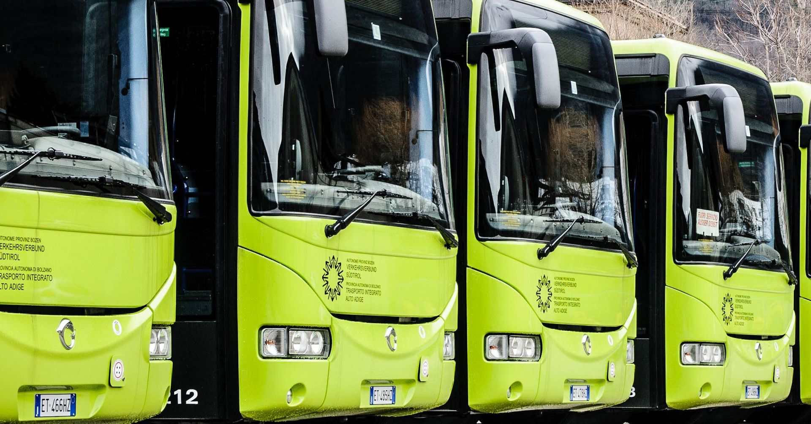
(길에 다니는 버스에도 모든 문구가 독일 이름을 한 번, 이탈리아 이름을 한 번, 이렇게 두 번씩 써놓았습니다.) 저는 나폴레옹 전쟁 당시 티롤의 반란에 대해 이것저것 알아보면서 티롤, 특히 남부 티롤은 독일어도 쓰지만 이탈리아어도 꽤 사용한다고 알고 있었는데, 거기서 보니까 정도가 좀 심할 정도로 독일어/이탈리아어 병기가 강조되더군요. 왜 이렇게 되었을까요? 아시는 분들이 많으시겠습니다만, 원래 티롤은 하나로서, 남티롤 북티롤이 나누어져 있던 곳이 아니었습니다. 티롤이 남티롤과 북티롤(사실 북티롤이라는 말은 없고 오스트리아령 티롤은 그냥 티롤입니다)로 나누어진 것은 바로 WW1 때문입니다.
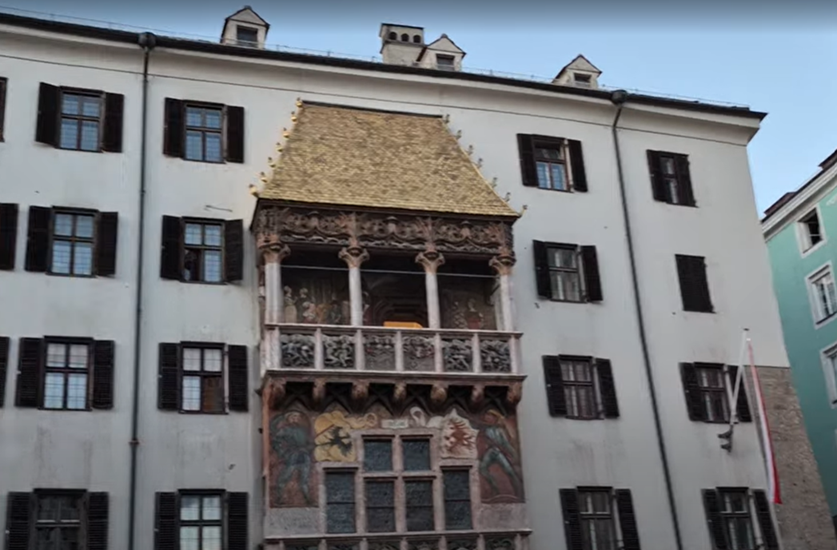
(첨부된 동영상은 작년 10월에 인스부르크 시내의 '황금 지붕'(Goldenes Dachl) 및 그 앞 광장을 찍은 것입니다. 그 날이 오스트리아 국경일이라서 저런 시민 합창단들 여럿이 공연을 하더군요. 저 황금 지붕은 신성로마제국 황제 막시밀리안 1세가 자신의 결혼을 기념하여 지은 것으로서 1500년에 완성되었는데, 막시밀리안 1세는 저 발코니에서 광장의 축제나 경기 등을 지켜보았다고 합니다. 그런 역사적 내역을 보면 저게 딱히 티롤 정체성의 상징물이어야 할 이유는 없어 보이는데, 아무튼 티롤 사람들은 저 황금 지붕에 많은 의미를 부여한다고 합니다.)
티롤은 대부분의 주민들이 독일어를 쓰긴 해도 오스트리아와는 또다른 독자적 정체성을 가진 지방이었습니다. 덕분에 나폴레옹 때도 전쟁에서 패배한 오스트리아는 마치 전쟁 배상금 내듯이 티롤을 뚝 잘라서 나폴레옹에게, 정확하게는 바이에른에게 갖다 바쳤습니다. 그러나 티롤 주민들은 오스트리아 황제에게 충성하는 편으로서, 나폴레옹과 바이에른의 통치에 저항하며 게릴라전을 벌였지요. WW1에서 패배한 오스트리아는 또 그런 대가를 치러야 했던 것입니다. 다만 좀 이상한 부분이 있습니다. 왜 티롤을 그렇게 반으로 잘라서 남부만 가져갔을까요? WW1 종전 때까지 이탈리아가 점령했던 곳까지를 이탈리아 영토로 인정해주었던 것일까요? 결론부터 말하자면 그렇지 않았고, 이탈리아군은 전쟁 내내 남부 티롤 대부분에 발도 들여놓지 못했습니다. 남티롤을 이탈리아가 차지하게 된 것은 아주 골치 아프고 사연이 긴 이야기입니다. 나폴레옹 전쟁 이전부터, 이탈리아 북부는 오스트리아의 지배를 받는 곳이었습니다. 그러다 1861년 통일 이탈리아 왕국이 만들어질 때도, 북동부 지방들, 즉 트렌토(Trento)를 중심으로 하는 트렌티노(Trentino) 지방, 베네치아(Venezia)를 중심으로 하는 베네토(Veneto) 지방, 그리고 트리에스테(Trieste))를 포함한 베네치아 줄리아(Venezia-Giulia) 지방은 여전히 오스트리아-헝가리의 영토였습니다. 이 지방들은 가리발디 등 이탈리아 통일의 주역들이 '미수복 이탈리아 영토'라며 벼르고 있었습니다. 결국 1866년 프로이센-오스트리아 전쟁 때 프로이센 편을 든 이탈리아는 베네토 지방은 결국 빼앗아 냅니다.
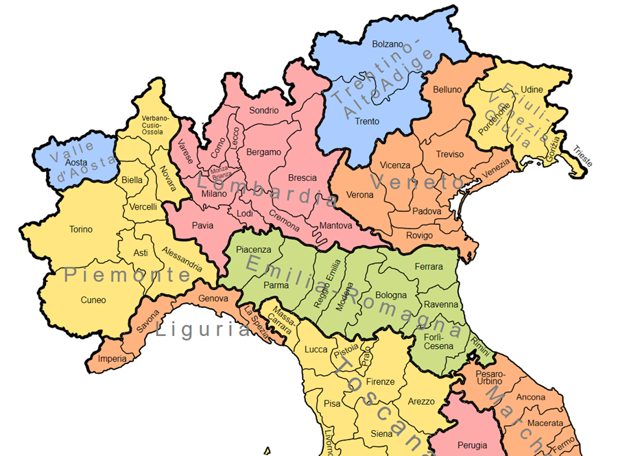
(그러니까 저 북동쪽의 트렌티노, 베네토, 그리고 베네치아 줄리아의 3개 지방은 이탈리아판 동북 3성이라고 할 수 있습니다.) 원래 이탈리아는 WW1 직전까지도 독일-오스트리아의 동맹국이었습니다. 그러나 1914년 WW1이 발발했음에도 이탈리아는 당장 참전하지 않았는데, 이유는 '이번 전쟁은 독일-오스트리아가 먼저 선전포고한 것이므로 거기에 참전할 의무가 없다'는 것이었습니다. 이탈리아는 다음 해인 1915년 오히려 영불 연합국 측에서 참전했는데, 이건 사실 1915년의 런던 비밀 조약 때문이었습니다. 이탈리아는 연합국으로 참전하는 대가로 영국과 프랑스에게 많은 것을 요구했는데, 그 중에는 다음과 같은 것들이 있었습니다. 1. 트렌티노(Trentino) 및 남티롤(South Tyrol) 2. 트리에스테(Trieste) 및 이스트리아(Istria) 반도 3. 달마티아(Dalmatia) 북부: 현재 크로아티아 영해의 해안선과 주요 섬들 4. 알바니아 보호권 5. 지중해 및 아프리카 지분 그런데 이탈리아계 주민들이 95% 이상이던 트렌티노까지는 그렇다쳐도, 대부분이 독일어를 쓰는 독일계 주민들이 살던 티롤은 대체 무슨 근거로 이탈리아가 요구했던 것일까요? 또 이왕 욕심내는 거면 티롤을 통째로 달라고 할 것이지 왜 반쪽짜리 남티롤만 달라고 했던 것일까요?
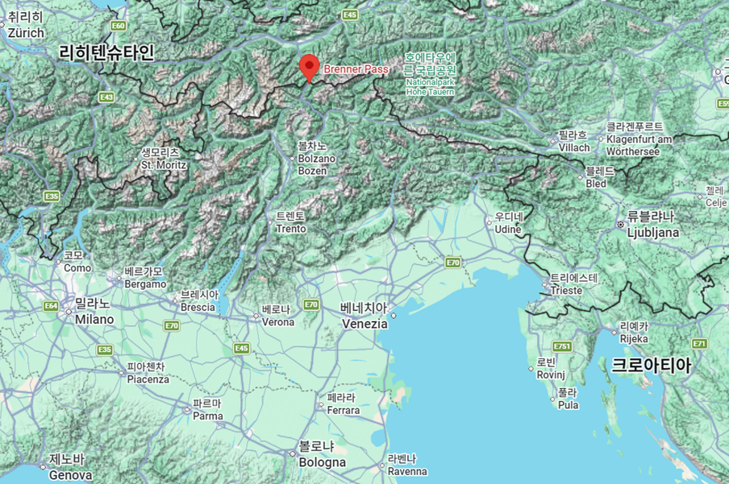
(이탈리아 북부의 지형도입니다. 트렌티노와 티롤은 알프스 산맥의 언저리 산악지대라는 것이 확연하게 보입니다. 저기 구글 지점 마크로 표시된 곳이 전통적인 이탈리아-오스트리아 사이의 통행로인 브레너 고갯길입니다.) 그건 지형와 상관 있습니다. 애초에 1866년 빈(Wien) 조약에서 오스트리아가 이탈리아에게 훨씬 더 부유한 지역인 베네토 지역만 내주고 트렌티노는 끝까지 쥐고 있었던 것도 바로 지형 때문이었습니다. 베네치아와 고리치아(Gorizia), 우디네(Udine) 등을 포함한 지역은 평탄한 평야이지만, 트렌티노는 험준한 산악지역이라서 오스트리아군이 방어하기는 매우 쉽고 아디제(Adige)강을 따라 이탈리아 베네토 지방으로 공격해들어가는 것은 매우 쉬운 곳이었습니다. 따라서 이탈리아 입장으로서는 트렌티노에 주둔한 오스트리아군이 눈엣가시 같은 존재였습니다. 그게 남티롤과도 상관 있었습니다. 트렌티노에는 이탈리아계 주민들이, 남티롤에는 독일계 주민들이 살고 있었지만, 지형상으로는 그냥 한 덩어리의 알프스 언저리 산악지대였습니다. 따라서 이탈리아는 안보 측면을 위해서라도, 방어에 쉬운 산악지대 꼭대기 능선을 따라서 오스트리아와의 국경을 정하고 싶었습니다. 특히, 알프스 산맥 정상의 브렌너 고갯길(Brenner pass, 독일어로는 Brennerpass, 이탈리아어로는 Passo del Brennero)을 국경이자 방어선으로 삼고자 했습니다. 이 브렌너 고갯길은 오스트리아와 이탈리아 사이를 잇는 전통적인 알프스 산맥의 통행로로서, 나폴레옹의 명에 따라 티롤을 침공하던 이탈리아군이 사용한 통로이기도 했고, 1812년 러시아 원정에 참전한 이탈리아군도 바로 이 길을 통해 폴란드로 갔습니다. 그래서 알프스 산맥 분수령의 남쪽과 북쪽에 걸쳐 있던 티롤의 남부 지역까지는 자기 땅으로 만들어야 한다고 이탈리아가 주장했던 것입니다. 영국과 프랑스는 어차피 당장 전쟁에서의 승리가 급한데다 어차피 자기 땅을 갈라주는 것도 아니었으므로 이런 요구 조건 대부분에 대해 승낙했습니다. 이런 약속을 받고 희망에 부푼 이탈리아는 과연 오스트리아와의 전쟁에서 펄펄 날았을까요?